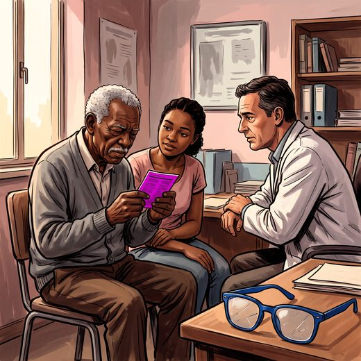

Consulta rápida à beira do leito
Condutas, doses e interações.
Referências da aula · 8
- American Academy of Ophthalmology. Preferred Practice Pattern Guidelines: Summary Benchmarks 2023 (Cataract in the Adult Eye; Age-Related Macular Degeneration; Primary Open-Angle Glaucoma; Diabetic Retinopathy). San Francisco: AAO; 2023.
- American Academy of Ophthalmology. Comprehensive Adult Medical Eye Evaluation Preferred Practice Pattern. San Francisco: AAO; 2020.
- Savard DJ, Ursua FG, Gaddey HL. Smell and taste disorders in primary care. Am Fam Physician. 2023;108(3):240-8. PMID 37725455.PubMed
- Doty RL. Olfactory dysfunction in neurodegenerative diseases: is there a common pathological substrate? Lancet Neurol. 2017;16(6):478-88. PMID 28504111. doi:10.1016/S1474-4422(17)30123-0.PubMedDOI
- Livingston G, Huntley J, Liu KY, et al. Dementia prevention, intervention, and care: 2024 report of the Lancet standing Commission. Lancet. 2024;404:572-628. PMID 39096926. doi:10.1016/S0140-6736(24)01296-0.PubMedDOI
- Montero-Odasso M, van der Velde N, Martin FC, et al. World guidelines for falls prevention and management for older adults: a global initiative. Age Ageing. 2022;51(9):afac205. PMID 36178003. doi:10.1093/ageing/afac205.PubMedDOI
- Salvi SM, Akhtar S, Currie Z. Ageing changes in the eye. Postgrad Med J. 2006;82(971):581-7. PMID 16954455. doi:10.1136/pgmj.2005.040857.PubMedDOI
- American Geriatrics Society 2023 Updated AGS Beers Criteria® for Potentially Inappropriate Medication Use in Older Adults. J Am Geriatr Soc. 2023;71(7):2052-81. PMID 37139824. doi:10.1111/jgs.18372.PubMedDOI